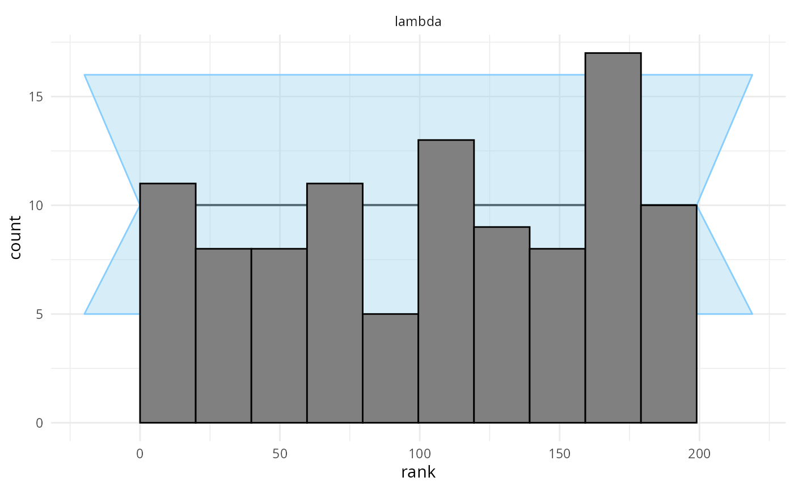

Getting Started with SBC
Hyunji Moon, Martin Modrák, Shinyoung Kim
2025-09-17
Source:vignettes/SBC.Rmd
SBC.RmdWhat is SBC?
SBC stands for “simulation-based calibration” and it is a tool to validate statistical models and/or algorithms fitting those models. In SBC we are given a statistical model, a method to generate draws from the prior predictive distribution (i.e. generate simulated datasets that match the model’s priors + likelihood) and an algorithm that fits the model to data.
The rough sketch of SBC is that we simulate some datasets and then for each simulated dataset:
- Fit the model and obtain \(D\) independent draws from the posterior.
- For each variable of interest, take the rank of the simulated value
within the posterior draws
- Where rank is defined as the number of draws < simulated value
It can be shown that if model matched the generator and algorithm works correctly, then for each variable, the ranks obtained in SBC should be uniformly distributed between \(0\) and \(D\). This corresponds quite directly to claims like “the posterior 84% credible interval should contain the simulated value in 84% of simulations”, the rank uniformity represents this claim for all interval widths at once. The theory of SBC is fully described in Modrák et al. which builds upon Talts et al.
This opens two principal use-cases of SBC:
- We have an algorithm that we trust is correct and a generator and and we want to check that we correctly implemented our Bayesian model
- We have a generator and a model we trust and we want to check whether a given algorithm correctly computes the posterior.
In any case, a failure of SBC only tells us that at least one of the three pillars of our inference (generator/model/algorithm) is mismatched to others.
In the context of larger Bayesian workflow (as discussed e.g. in Bayesian Workflow by Gelman et al. or Towards A Principled Bayesian Workflow by Betancourt), SBC can be used to validate the implementation of a model/algorithm, which is just one of many things to check if one needs a robust analysis. In particular, SBC does not use any real data and thus cannot tell you anything about potential mismatch between your model and the actual data you plan to analyze. However, this is in some sense an advantage: if our model fails (e.g. we have convergence problems) on real data, we don’t know whether the problem is a bug in our model or a mismatch between the model and the data. If we simulate data exactly as the model assumes, any problem has to be a bug. Additionally, we can use SBC to better understand whether the data we plan to collect are actually capable of answering the questions we have.
This vignette will demonstrate how the basic package interface can be used to run simulations, calculate ranks and investigate calibration.
Aims of the package
The SBC package aims to provide a richer and more usable alternative
to rstan::sbc(). The main design goals is to make it easy
to incorporate SBC in your everyday modelling workflow. To this end:
- No changes to your model are needed to test it with SBC.
- Once you have your model and code to simulate data ready, it is easy to gradually move from 1 simulation to check your model does not crash to 1000 simulations that can resolve even small inaccuracies.
We intentionally do not focus on mechanisms that would let you automatically construct a simulator just from your model: if we did that, any bugs in your model would automatically carry over to the simulator and the SBC would only check that the algorithm works. Instead we believe it is good practice to implement the simulator in the most easy way possible while altering aspects of the implementation that should not matter (e.g. for loops vs. matrix multiplication). The best solution would be to have one person write the simulator and a different person the model (though that would often be impractical). This way you get two independent pieces of code that should correspond to the same data generating process and it becomes less likely that there is the same mistake in both versions. A mistake that is in just one version can then be (at least in principle) caught by SBC.
This is actually a well known pattern in software safety: critical components in airplanes are required to have two completely independent implementations of the same software (or even hardware) and the system checks that both produce the same output for the same input. Similarly, pharmaceutical companies analyzing drug trials are required to have the data analysis pipeline written by two separate teams and the results of both must match (this is not required for academic trials - who would need safety there, right?). The main reason this method is used relatively rarely is that implementing the same thing twice is costly. But statistical models are usually relatively small pieces of code and the added cost of the second implementation (the generator) thus tends to very small.
Naming
To avoid confusion the package and the docs tries to consistently give the same meaning to the following potentially ambiguous words:
- variable All quantities of interest for SBC - this includes both parameters that are directly estimated by the model and quantities derived from those parameters.
-
draws are assumed to come from either a single realized
posterior distribution of a fitted model or the prior distribution of
the model. The number of draws (
n_draws) is the number of posterior draws produced by fitting the model. -
simulation / sim a set of simulated values for all
variables and the accompanying generated data. I.e. the number of
simulations (
n_sims) is the number of times an individual model is fitted - fit represents the result of fitting a single simulation
Overview of the Architecture
To perform SBC, one needs to first generate simulated datasets and
then fit the model to those simulations. The SBC_datasets
object holds the simulated prior and data draws.
SBC_datasets objects can be created directly by the user,
but it is often easier to use one of provided Generator
implementations that let you e.g. wrap a function that returns the
variables and observed data for a single simulation or use a
brms specification to generate draws corresponding to a
given brms model.
The other big part of the process is a backend. The SBC
package uses a backend object to actually fit the model to the simulated
data and generate posterior draws. In short, backend bundles together
the algorithm in which inference is run (cmdstanr,
rstan, brms, jags, etc.), the
model, and additional platform-specific inference parameters which are
necessary to run inference for the model-platform combination
(e.g. number of iterations, initial values, …). In other words backend
is a function that takes data as its only input and provides posterior
draws.
Once we have a backend and an SBC_datasets instance, we
can call compute_SBC to actually perform the SBC. The
resulting object can then be passed to various plotting and summarising
functions to let us easily learn if our model works as expected.
Simple Poisson Regression
In this vignette we will demonstrate how the interface is used with a simple poisson model. First we’ll setup and configure our environment.
library(SBC)
library(ggplot2)
use_cmdstanr <- getOption("SBC.vignettes_cmdstanr", TRUE) # Set to false to use rstan instead
if(use_cmdstanr) {
library(cmdstanr)
} else {
library(rstan)
rstan_options(auto_write = TRUE)
}
options(mc.cores = parallel::detectCores())
# Enabling parallel processing via future
library(future)
plan(multisession)
# The fits are very fast,
# so we force a minimum chunk size to reduce overhead of
# paralellization and decrease computation time.
options(SBC.min_chunk_size = 5)
# Setup caching of results
if(use_cmdstanr) {
cache_dir <- "./_basic_usage_SBC_cache"
} else {
cache_dir <- "./_basic_usage_rstan_SBC_cache"
}
if(!dir.exists(cache_dir)) {
dir.create(cache_dir)
}
theme_set(theme_minimal())
# Run this _in the console_ to report progress for all computations to report progress for all computations
# see https://progressr.futureverse.org/ for more options
progressr::handlers(global = TRUE)Model Setup
We will be running SBC against a model that defines
y ~ Poisson(lambda), where
lambda ~ Gamma(15, 5). We will use the following Stan
model:
data{
int N;
array[N] int y;
}
parameters{
real<lower = 0> lambda;
}
model{
lambda ~ gamma(15, 5);
y ~ poisson(lambda);
}
if(use_cmdstanr) {
cmdstan_model <- cmdstanr::cmdstan_model("stan/poisson.stan")
} else {
rstan_model <- rstan::stan_model("stan/poisson.stan")
}Generator
Once we have defined the model, we can create a generator function which will generate prior and data draws:
# A generator function should return a named list containing elements "variables" and "generated"
poisson_generator_single <- function(N){ # N is the number of data points we are generating
lambda <- rgamma(n = 1, shape = 15, rate = 5)
y <- rpois(n = N, lambda = lambda)
list(
variables = list(
lambda = lambda
),
generated = list(
N = N,
y = y
)
)
}As you can see, the generator returns a named list containing random draws from the prior and generated data realized from the prior draws - the data are already in the format expected by Stan.
Create SBC_datasets from generator
SBC provides helper functions
SBC_generator_function and generate_datasets
which takes a generator function and calls it repeatedly to create a
valid SBC_datasets object.
set.seed(54882235)
n_sims <- 100 # Number of SBC iterations to run
poisson_generator <- SBC_generator_function(poisson_generator_single, N = 40)
poisson_dataset <- generate_datasets(
poisson_generator,
n_sims)Defining backend
Once we have the model compiled we’ll create a backend object from
the model. SBC includes pre-defined backend objects for HMC
sampling with cmdstan and rstan. In addition,
it also provides generator function and backend for brms
based models.
Note that you can create your own backend if you wish to use a different sampling/optimization platform, such as variational inference or JAGS.
Here we’ll just use the pre-defined cmdstan backend, in which we pass our compiled model and any additional arguments we would like to pass over to the sampling method:
if(use_cmdstanr) {
poisson_backend <- SBC_backend_cmdstan_sample(
cmdstan_model, iter_warmup = 1000, iter_sampling = 1000, chains = 2)
} else {
poisson_backend <- SBC_backend_rstan_sample(
rstan_model, iter = 2000, warmup = 1000, chains = 2)
}Computing Ranks
we can then use compute_SBC to fit our simulations with
the backend:
results <- compute_SBC(poisson_dataset, poisson_backend,
cache_mode = "results",
cache_location = file.path(cache_dir, "results"))## Results loaded from cache file 'results'## - 96 (96%) fits had steps rejected. Maximum number of steps rejected was 3.## - 1 (1%) fits had maximum Rhat > 1.01. Maximum Rhat was 1.011.## Not all diagnostics are OK.
## You can learn more by inspecting $default_diagnostics, $backend_diagnostics
## and/or investigating $outputs/$messages/$warnings for detailed output from the backend.Here we also use the caching feature to avoid recomputing the fits when recompiling this vignette. In practice, caching is not necessary but is often useful.
Viewing Results
We can now inspect the results to see if there were any errors and check individual stats:
dplyr::select(results$stats, sim_id:ess_tail) # Hiding some less useful statistics for clarity## sim_id variable simulated_value rank z_score mean sd
## 1 1 lambda 1.441812 13 -1.501694087 1.725853 0.1891470
## 2 2 lambda 2.991399 86 -0.188887934 3.039493 0.2546170
## 3 3 lambda 2.505585 49 -0.698130727 2.680618 0.2507169
## 4 4 lambda 2.863184 54 -0.683807732 3.039353 0.2576293
## 5 5 lambda 2.972115 170 1.158010949 2.679651 0.2525576
## 6 6 lambda 2.544888 160 0.847982761 2.351286 0.2283092
## 7 7 lambda 2.646566 19 -1.435321388 3.021170 0.2609897
## 8 8 lambda 2.988570 135 0.286440559 2.913205 0.2631121
## 9 9 lambda 2.554855 18 -1.318712834 2.881521 0.2477156
## 10 10 lambda 1.725117 8 -1.472702333 2.034624 0.2101624
## 11 11 lambda 1.983277 78 -0.326961775 2.051754 0.2094347
## 12 12 lambda 3.173095 113 0.133791039 3.137776 0.2639852
## 13 13 lambda 3.205621 198 2.500128948 2.579017 0.2506287
## 14 14 lambda 3.612096 173 1.063996007 3.328464 0.2665724
## 15 15 lambda 2.808949 168 1.052663180 2.558607 0.2378178
## 16 16 lambda 2.070563 39 -0.737282660 2.233066 0.2204075
## 17 17 lambda 2.779688 175 1.017966062 2.532166 0.2431538
## 18 18 lambda 2.925609 57 -0.396791487 3.026416 0.2540549
## 19 19 lambda 2.750356 163 0.771996557 2.572147 0.2308416
## 20 20 lambda 3.106723 24 -1.292459173 3.452304 0.2673831
## 21 21 lambda 3.412007 178 1.162445949 3.102721 0.2660655
## 22 22 lambda 3.616894 134 0.386958384 3.510529 0.2748741
## 23 23 lambda 2.294084 181 1.150986026 2.049403 0.2125836
## 24 24 lambda 2.116142 54 -0.659973413 2.264633 0.2249960
## 25 25 lambda 2.249235 70 -0.636187617 2.394124 0.2277471
## 26 26 lambda 2.687811 142 0.651437515 2.531350 0.2401782
## 27 27 lambda 1.752253 11 -1.655833148 2.108951 0.2154195
## 28 28 lambda 1.824980 148 0.627335305 1.707876 0.1866686
## 29 29 lambda 3.046774 119 0.192941536 2.997602 0.2548539
## 30 30 lambda 2.545681 128 0.392452970 2.453543 0.2347743
## 31 31 lambda 2.547563 39 -0.918523211 2.767952 0.2399379
## 32 32 lambda 2.530286 110 -0.031976145 2.537975 0.2404466
## 33 33 lambda 3.488554 198 3.043916402 2.715768 0.2538789
## 34 34 lambda 4.202627 196 2.496287925 3.500742 0.2811716
## 35 35 lambda 2.202380 119 0.291485119 2.139633 0.2152660
## 36 36 lambda 2.776523 48 -0.627618807 2.936541 0.2549593
## 37 37 lambda 4.745755 151 0.596548268 4.556775 0.3167897
## 38 38 lambda 2.926568 178 1.158966774 2.644426 0.2434423
## 39 39 lambda 3.207927 83 -0.282692174 3.283654 0.2678755
## 40 40 lambda 2.050516 118 0.221334899 2.004112 0.2096562
## 41 41 lambda 2.949112 101 -0.088324032 2.971600 0.2546051
## 42 42 lambda 2.027079 97 -0.141357389 2.056636 0.2090940
## 43 43 lambda 3.109239 131 0.543625486 2.969326 0.2573700
## 44 44 lambda 3.121440 182 1.361716605 2.781752 0.2494558
## 45 45 lambda 4.243259 132 0.571397898 4.076947 0.2910609
## 46 46 lambda 2.744712 196 1.725694537 2.366205 0.2193362
## 47 47 lambda 4.132018 199 3.505528124 3.235931 0.2556211
## 48 48 lambda 1.557847 24 -1.230794572 1.788938 0.1877573
## 49 49 lambda 2.532101 84 -0.168158392 2.572108 0.2379113
## 50 50 lambda 2.964897 146 0.560512317 2.824785 0.2499719
## 51 51 lambda 3.681536 161 0.798744318 3.466995 0.2685976
## 52 52 lambda 3.144808 119 0.193597909 3.094643 0.2591180
## 53 53 lambda 3.887949 163 0.889580436 3.644047 0.2741762
## 54 54 lambda 3.196185 161 1.013230448 2.935216 0.2575613
## 55 55 lambda 2.995181 146 0.465233319 2.874634 0.2591108
## 56 56 lambda 2.356170 60 -0.463845458 2.464982 0.2345870
## 57 57 lambda 2.292702 2 -2.002135379 2.798191 0.2524748
## 58 58 lambda 3.566893 6 -1.950857748 4.151991 0.2999184
## 59 59 lambda 3.373654 14 -1.529297940 3.820671 0.2923023
## 60 60 lambda 4.211833 117 0.285687477 4.126979 0.2970168
## 61 61 lambda 2.249955 75 -0.424211895 2.344588 0.2230796
## 62 62 lambda 1.990641 169 0.907181565 1.816890 0.1915280
## 63 63 lambda 2.588078 45 -0.824126352 2.795250 0.2513843
## 64 64 lambda 1.916143 36 -0.858133907 2.098943 0.2130208
## 65 65 lambda 1.432994 23 -1.283940633 1.675846 0.1891459
## 66 66 lambda 4.605845 105 0.221880843 4.535067 0.3189899
## 67 67 lambda 1.971748 177 1.403854791 1.702277 0.1919511
## 68 68 lambda 2.573467 143 0.714389461 2.413336 0.2241500
## 69 69 lambda 3.574121 56 -0.618650521 3.753693 0.2902633
## 70 70 lambda 3.301493 11 -1.539104657 3.743910 0.2874509
## 71 71 lambda 2.865513 116 0.139942995 2.829747 0.2555786
## 72 72 lambda 2.675924 125 0.270666958 2.607764 0.2518199
## 73 73 lambda 2.700097 70 -0.239242926 2.760478 0.2523851
## 74 74 lambda 2.287127 10 -1.741721959 2.711650 0.2437374
## 75 75 lambda 3.466282 189 1.907325909 2.959903 0.2654916
## 76 76 lambda 2.780579 26 -1.071945933 3.069806 0.2698142
## 77 77 lambda 2.711286 121 0.298966076 2.639061 0.2415853
## 78 78 lambda 3.704305 176 1.142914504 3.408947 0.2584253
## 79 79 lambda 2.137092 21 -1.244406493 2.419204 0.2267038
## 80 80 lambda 3.885904 71 -0.473028614 4.028637 0.3017438
## 81 81 lambda 2.975582 153 0.520945954 2.841588 0.2572129
## 82 82 lambda 2.555879 197 2.525528624 2.034529 0.2064320
## 83 83 lambda 1.714758 11 -1.623054828 2.063051 0.2145911
## 84 84 lambda 2.939516 148 0.731297356 2.755810 0.2512051
## 85 85 lambda 2.012372 78 -0.289527799 2.072870 0.2089526
## 86 86 lambda 2.042660 109 0.131531033 2.015090 0.2096073
## 87 87 lambda 2.831330 105 -0.001604659 2.831756 0.2656496
## 88 88 lambda 4.146054 104 -0.009810902 4.149050 0.3054299
## 89 89 lambda 4.269022 188 1.393655334 3.847800 0.3022428
## 90 90 lambda 2.674868 169 0.934662376 2.457930 0.2321039
## 91 91 lambda 2.638067 53 -0.597978687 2.789752 0.2536641
## 92 92 lambda 3.491849 160 0.834545540 3.270545 0.2651788
## 93 93 lambda 2.534526 66 -0.438036655 2.642202 0.2458164
## 94 94 lambda 3.659232 136 0.426876388 3.542485 0.2734903
## 95 95 lambda 2.892749 66 -0.522133631 3.030465 0.2637561
## 96 96 lambda 3.481138 121 0.301675259 3.399947 0.2691328
## 97 97 lambda 3.280706 68 -0.395256190 3.389850 0.2761353
## 98 98 lambda 2.830662 175 1.263187438 2.530392 0.2377085
## 99 99 lambda 4.738485 95 -0.139809747 4.783307 0.3205959
## 100 100 lambda 3.067411 66 -0.481830474 3.197087 0.2691335
## q5 median q95 rhat ess_bulk ess_tail
## 1 1.425542 1.725310 2.051346 1.0011869 660.0295 715.1319
## 2 2.633600 3.031315 3.471290 0.9997378 723.2247 818.7563
## 3 2.286277 2.668550 3.106196 0.9995790 653.5429 960.0598
## 4 2.635808 3.033580 3.470293 1.0002172 819.4936 1003.8764
## 5 2.278813 2.664300 3.119555 1.0016487 737.6552 984.2296
## 6 1.996707 2.341710 2.742270 0.9997896 842.6717 1090.9653
## 7 2.600472 3.017635 3.462150 1.0004873 760.8959 739.4559
## 8 2.507262 2.895780 3.362985 1.0006535 533.3517 856.9942
## 9 2.492170 2.873655 3.309812 1.0052057 744.3574 1074.7049
## 10 1.713043 2.031755 2.390874 1.0054013 679.3340 1040.8612
## 11 1.724270 2.042795 2.403703 1.0010527 815.0111 973.0837
## 12 2.716921 3.130805 3.574737 1.0053059 651.7761 1039.7132
## 13 2.183970 2.561650 3.017141 1.0026517 703.2212 811.6780
## 14 2.888450 3.321515 3.765640 1.0026125 750.3075 840.0322
## 15 2.175213 2.553435 2.969768 0.9998641 730.6925 1259.4481
## 16 1.879628 2.222870 2.607362 1.0047340 516.6965 1040.3195
## 17 2.144321 2.525805 2.946923 0.9995265 715.9406 920.1079
## 18 2.623396 3.009830 3.461660 1.0012452 697.5614 1029.8202
## 19 2.211069 2.568220 2.962087 1.0003297 751.0762 1065.1954
## 20 3.005747 3.452150 3.900292 1.0000789 993.2648 935.2418
## 21 2.704091 3.080630 3.572188 1.0001495 681.6749 948.6171
## 22 3.075141 3.505210 3.979986 1.0003745 667.7095 758.5672
## 23 1.709310 2.044630 2.428970 1.0001475 796.9757 1075.3850
## 24 1.903339 2.252245 2.657170 1.0087929 708.9603 1041.2990
## 25 2.026301 2.390120 2.775346 1.0029391 646.7598 1209.1364
## 26 2.155518 2.522120 2.937612 1.0001582 715.5761 890.9293
## 27 1.771833 2.105525 2.461035 0.9998778 767.3054 1031.3733
## 28 1.409583 1.703375 2.025194 1.0006236 880.7755 1026.9417
## 29 2.588206 2.989975 3.442743 1.0006011 905.0299 939.5602
## 30 2.082984 2.448860 2.863097 0.9999949 658.9626 1112.4987
## 31 2.391096 2.757415 3.182740 1.0000495 921.9282 1102.0187
## 32 2.160176 2.523790 2.948411 0.9999317 787.3817 1127.8414
## 33 2.305504 2.709085 3.144192 0.9997342 842.8924 798.3485
## 34 3.060178 3.482410 3.988796 0.9998837 806.4903 1101.2251
## 35 1.804955 2.131940 2.513515 0.9998412 768.2363 1065.1438
## 36 2.527412 2.929765 3.358909 1.0006236 788.5764 878.1683
## 37 4.059522 4.545045 5.090742 1.0013545 718.6773 977.0057
## 38 2.247564 2.639940 3.055171 1.0003029 667.0379 954.3288
## 39 2.859915 3.265925 3.749442 1.0113134 736.0217 919.8987
## 40 1.669045 2.000295 2.345767 1.0085661 851.1195 1009.1286
## 41 2.570919 2.960900 3.406436 1.0035349 798.4497 1012.2082
## 42 1.707909 2.052685 2.410390 1.0021600 924.9461 805.3713
## 43 2.565836 2.960190 3.406040 1.0010983 637.5778 997.6310
## 44 2.378691 2.778855 3.204051 0.9995515 700.9183 950.1423
## 45 3.606645 4.070870 4.571690 1.0048858 809.0206 967.6233
## 46 2.016641 2.352885 2.737163 1.0007081 719.9356 922.7823
## 47 2.840629 3.225550 3.671694 0.9995151 864.0128 1018.6007
## 48 1.499041 1.784640 2.105972 1.0002198 827.7344 940.7343
## 49 2.190192 2.568805 2.965094 1.0006513 712.4777 690.9827
## 50 2.429369 2.813880 3.251746 0.9999529 800.9823 994.8016
## 51 3.028606 3.459785 3.915139 1.0039387 643.1534 931.8337
## 52 2.685204 3.092625 3.532625 1.0007379 727.3670 897.1089
## 53 3.195210 3.636965 4.088961 1.0013633 720.6847 982.5962
## 54 2.526422 2.919155 3.370417 1.0008260 769.3383 947.2193
## 55 2.460466 2.856135 3.311713 1.0005429 940.9927 877.1722
## 56 2.088611 2.460160 2.868999 1.0034291 739.7487 755.3741
## 57 2.394655 2.794805 3.216873 1.0013400 745.4077 1204.6245
## 58 3.655847 4.146495 4.671717 0.9997149 791.2195 821.9506
## 59 3.338982 3.819130 4.297463 1.0004572 773.0375 822.5117
## 60 3.659943 4.117970 4.621887 1.0012200 743.4275 920.1718
## 61 1.997918 2.337445 2.725312 1.0015517 800.5474 992.6161
## 62 1.509629 1.814020 2.147109 1.0016081 954.9923 855.9785
## 63 2.404316 2.786740 3.224042 1.0001407 588.4572 879.4026
## 64 1.760494 2.092000 2.456535 1.0001785 545.6342 1018.6007
## 65 1.373037 1.667420 1.997669 1.0043744 791.7959 919.3614
## 66 4.018374 4.530270 5.064019 1.0008219 638.0565 872.9338
## 67 1.400203 1.691045 2.034384 0.9997568 842.8434 995.9205
## 68 2.053593 2.414575 2.795053 1.0037357 763.3728 1005.0143
## 69 3.269985 3.751370 4.242865 1.0037733 794.3672 853.1240
## 70 3.284205 3.736505 4.223986 1.0009122 670.6007 772.5784
## 71 2.427074 2.818530 3.261154 1.0009674 637.9633 852.9921
## 72 2.215489 2.595775 3.033569 1.0003754 773.7432 1075.7196
## 73 2.361864 2.751815 3.195270 0.9995269 668.6138 754.8831
## 74 2.318596 2.692930 3.117669 1.0005643 732.1138 1261.6604
## 75 2.527322 2.953010 3.403400 1.0045287 704.5385 851.0551
## 76 2.647189 3.058175 3.533150 1.0005898 648.3222 954.0315
## 77 2.253260 2.629410 3.045765 1.0010361 701.6761 882.7765
## 78 2.995416 3.402950 3.852020 1.0076472 839.9925 1056.1061
## 79 2.050113 2.420890 2.800033 1.0011415 846.4774 898.8490
## 80 3.538894 4.015595 4.545651 1.0005755 791.5733 943.3290
## 81 2.433290 2.836725 3.279304 0.9996790 632.0390 1077.6820
## 82 1.703770 2.030265 2.380612 0.9998971 875.5376 1182.7928
## 83 1.727612 2.053290 2.418300 1.0013763 826.5146 1087.3262
## 84 2.351135 2.753480 3.172129 1.0000357 644.1129 935.7840
## 85 1.745923 2.068240 2.430044 1.0001230 804.6764 1258.8233
## 86 1.679003 2.008805 2.366873 0.9998991 761.3000 901.9266
## 87 2.421136 2.818110 3.292978 1.0026520 686.2053 903.2702
## 88 3.657878 4.137180 4.668840 0.9995274 676.0670 1068.8565
## 89 3.352123 3.836910 4.349346 1.0008308 739.0588 798.1038
## 90 2.067192 2.457640 2.856483 1.0006057 668.7194 667.8999
## 91 2.389628 2.779020 3.232007 1.0007516 608.3822 773.1341
## 92 2.854354 3.259910 3.727297 0.9996340 791.2937 1058.0783
## 93 2.249837 2.634340 3.073669 1.0006354 932.8111 859.4093
## 94 3.101970 3.538840 4.001970 1.0003342 651.7645 950.3954
## 95 2.607559 3.018795 3.492941 1.0000664 680.9596 792.3254
## 96 2.971889 3.388770 3.863469 1.0054110 713.5742 1032.3749
## 97 2.951304 3.381640 3.856842 0.9998179 764.5710 1138.7384
## 98 2.165190 2.520520 2.944158 1.0024905 711.3937 952.3345
## 99 4.254724 4.779785 5.336192 1.0013898 635.3145 817.4980
## 100 2.764843 3.194175 3.652710 1.0005225 627.0584 700.2526Plots
And finally, we can plot the rank distribution to check if the ranks
are uniformly distributed. We can check the rank histogram and ECDF
plots (see vignette("rank_visualizations") for description
of the plots):
plot_rank_hist(results)
plot_ecdf(results)
plot_ecdf_diff(results)
Since our simulator and model do match and Stan works well, we see that the plots don’t show any violation.
Is SBC frequentist?
A bit of philosophy at the end - SBC is designed to test Bayesian models and/or algorithms, but it fits very well with standard frequentist ideas (and there is no shame about this). In fact, SBC can be understood as a very pure form of hypothesis testing as the “null hypothesis” that the ranks are uniformly distributed is completely well specified, can (beyond numerical error) actually hold exactly and we are conducting the test against a hypothesis of interest. SBC thus lets us follow a simple naive-Popperian way of thinking: we try hard to disprove a hypothesis (that our model + algorithm + generator is correct) and when we fail to disprove it, we can consider the hypothesis corroborated to the extent our test was severe. This is unlike many scientific applications of hypothesis testing where people use a rejection of the null hypothesis as evidence for alternative (which is usually not warranted).
We currently can’t provide a good theoretical understanding of the
severity of a given SBC test, but obviously the more iterations and the
narrower the confidence bands of the ecdf and
ecdf_diff plots, the more severe the test. One can also use
empirical_coverage() and plot_coverage()
functions to investigate the extent of miscalibration that we cannot
rule out given our results so far.
Alternatively, one can somewhat sidestep the discussions about philosophy of statistics and understand SBC as a probabilistic unit test for your model. In this view, SBC tests a certain identity that we expect to hold if our system is implemented correctly, similarly how one could test an implementation of an arithmetical system by comparing the results of computing \((x + y)^2\) and \(x^2 + 2xy + y^2\) - any mismatch means the test failed.
Where to go next?
You may want to explore short examples showing how SBC can be used to diagnose bad parametrization or indexing bugs or you may want to read through a longer example of what we consider best practice in model-building workflow.
Alternatively, you might be interested in the limits of SBC — the types of problems that are hard / impossible to catch with SBC and what can we do to guard against those.
Acknowledgements
Development of this package was supported by ELIXIR CZ research infrastructure project (Ministry of Youth, Education and Sports of the Czech Republic, Grant No: LM2018131) including access to computing and storage facilities.